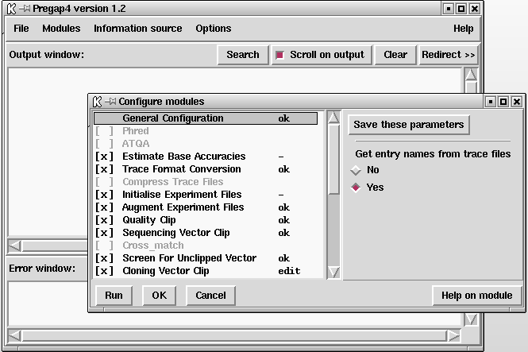
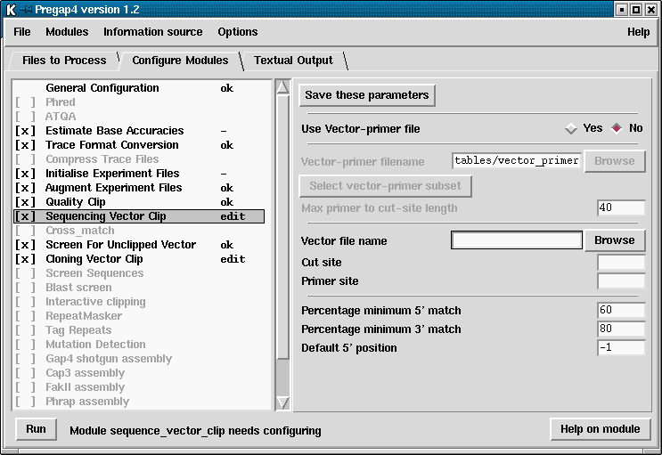

The pregap4 Options menu contains options for modifying the fonts and colours used. These options are common to many programs and so are documented elsewhere.
See section Font Selection.
See section Colour Selector.
Pregap4 supports two styles of windowing. The default method is a compact mode, with the alternative being "separate" mode - similar to gap4 and spin.

This is the "separate" window style. Here the main window is always visible, with commands in the main window bringing up new windows. In the picture above the configure window can be seen on top of the main window.
The second style is "compact" mode.

In the compact picture above the most common top level windows are "pages" in a tabbed notebook.
The benefit is greatly reduced screen space and quicker controls, but the text output window is no longer permanently visible.
To switch styles select the "Compact Window Style" and "Separate Windows Style" commands from the Options menu.